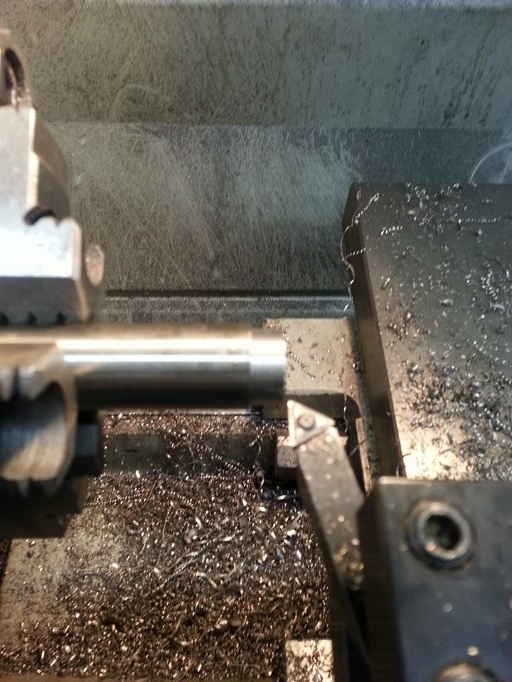
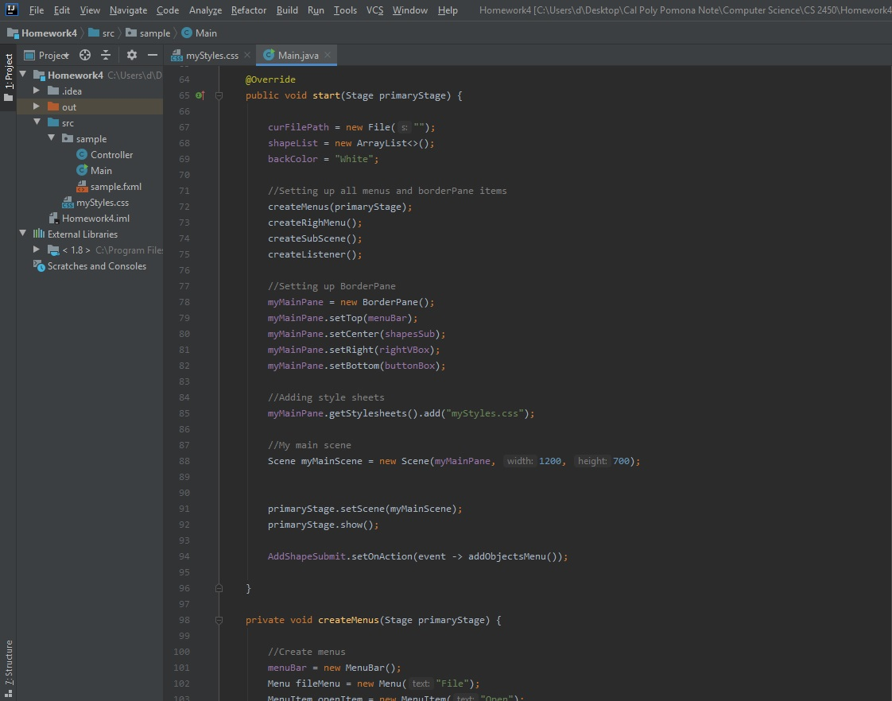

Alan Huang
California State Polytechnic University Pomona, Computer Science
California State Polytechnic University Pomona, Computer Science
My name is Alan Huang, I am very excited about technology and craftsmanship. I love to tinker with machinery,
and doing hands-on work myself. My hobbies include building pc, coding, building cars, playing video games
and building models. I used to be an auto technician and my job included building engines to gain more hose
power and complete wiring for aftermarket electronic devices such as the ECU for engine management.
I am an expert in mechanical and electrical related system repair, and my desire to know more about the
technology on the software side made me pursue a B.A. in Computer Science.
I have about 3 semesters left to finish my degree and I feel that the material I have learned from
university gave me a greater understanding of the software development.
I believe my knowledge in both hardware and software will help me develop useful technology in the future.
• California State Polytechnic University Pomona
Bachelor of Science, Major in Computer Science , Expected March 2021
2019 spring, 2019 fall academic semesters – Award dean’s List
GPA: 3.72/4.0
• Language: Java, C++, python, HTML, CSS, JavaScript, MIPS, MATLAB
• Development Tools: IntelliJ IDEA, Eclipse, NetBeans
• Operation System: Windows, OSX
• Mechanical and Electrical: Troubleshooting, Assemble, Repair, Fabrication, Welding
Here are some of the vehicles that I worked on before. These are the photos that I can found from my phone. Just to show case my professional craftsmanship skill. 
I am a huge fan of robot model, so I bought a arduino nano robotic ship to make
myself a litte side project for fun.

Robot game
This is actual an extra credit project for my Assembly Language course. This is the
firt time I ever use the MIPS to write a program. Overal this project got me a A for
my Assembly Language course.
Click on this link
to my github
3D shape tool
This one is the project for my Programming Graphical User Interfaces course. This software
helped my to gain better understanding in JavaFX and CSS.
Click on this link
to my github

Technician at Pit Garage, South El Monte, 02/2016 - Present